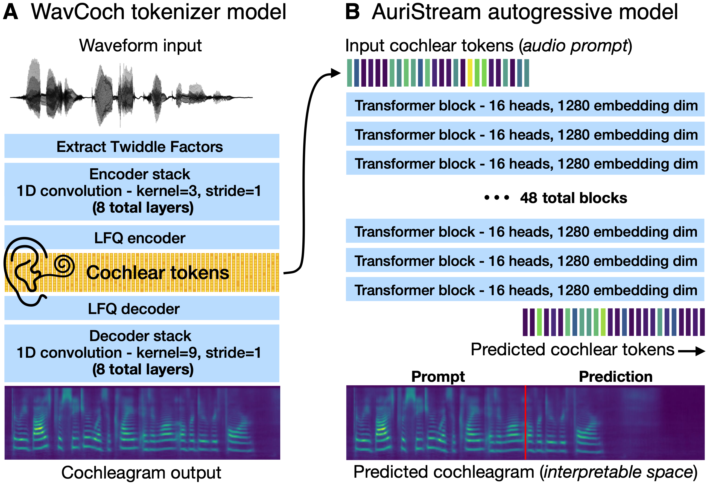

AuriStream sample generations
We present examples of AuriStream (1B) audio generations. For each example, we prompt AuriStream with the first 3 seconds of an audio clip from the LibriSpeech test set (unseen during training), and it predicts the subsequent 3 seconds. For comparison, we provide the ground truth (GT) continuations below along with AuriStream's predictions across several random seeds. The predicted cochleagrams were converted into audio with a vocoder and we visualized the speech continuation in the cochlegram space. We would like to emphasize that the examples are not cherry picked; they are simply the first random generations obtained under a consecutive series of random seeds.
LibriSpeech – 121-123859-0004
LibriSpeech – 908-31957-0019
LibriSpeech – 672-122797-0001
LibriSpeech – 1089-134686-0006
LibriSpeech – 2300-131720-0015
LibriSpeech – 4970-29095-0033
Common Failiure Modes
As observed in the examples above, AuriStream can generate fluent continuations of speech, but it also exhibits common failure modes. Among these is the generation of some plausible sounding nonwords in the middle of sentences. Another (less common) failiure mode is the generation of a completely nonsensical sound or slurred word, which causes the entire sentence to degenerate.
Architecture
